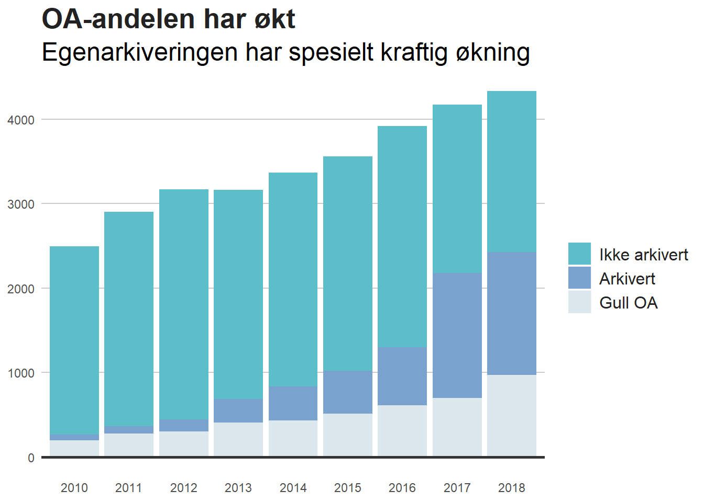

Kapittel 3 Hva publiserer NTNU?
| Publiseringskategorier ved NTNU | |||
|---|---|---|---|
| Vitenskapelig publisering 2010-2018 | |||
| År | Artikkel | Antologikapittel | Monografi |
| 2010 | 2496 | 1293 | 59 |
| 2011 | 2902 | 1414 | 54 |
| 2012 | 3168 | 1466 | 44 |
| 2013 | 3162 | 1486 | 46 |
| 2014 | 3367 | 1388 | 56 |
| 2015 | 3557 | 1289 | 44 |
| 2016 | 3916 | 1211 | 46 |
| 2017 | 4174 | 1282 | 27 |
| 2018 | 4332 | 1137 | 38 |
